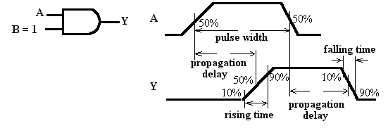
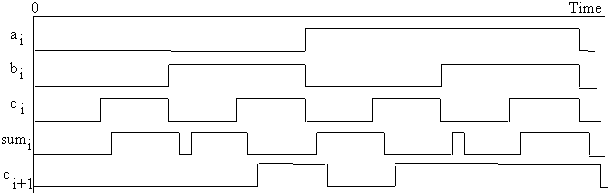

Dynamic Characteristics of Combinational Logic Functions
Measuring on a real waveform diagram
Example 1: Propagation delay in an AND gate

Example 2: Delays in a full adder circuit
Propagation Delay is one of the major factors that determines the hardware speed of digital systems
Another factor that determines the dynamic behavior of digital systems is the changing speed of signal waveforms. The time duration of the rising edge and the falling edge are the two metrics in this category.

static hazards -- the signal should normally remain unchanged, but momentarily changes its value in a short period of time.
Hazard usually causes no harm to the normal function of a pure combinational logic circuit. However, when combinational logic circuits are used in connection with sequential circuits, the short-duration pulses (glitches) caused by the hazards may affect the normal operation of the sequential circuits, if the overall system works asynchronously.
It is necessary to understand the cause of the hazard and find a method to avoid it.